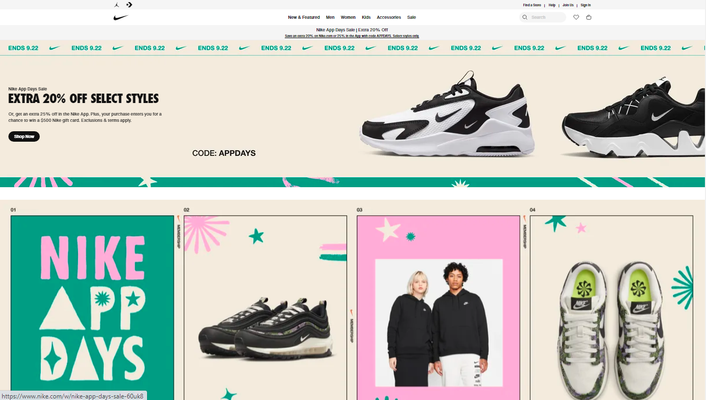
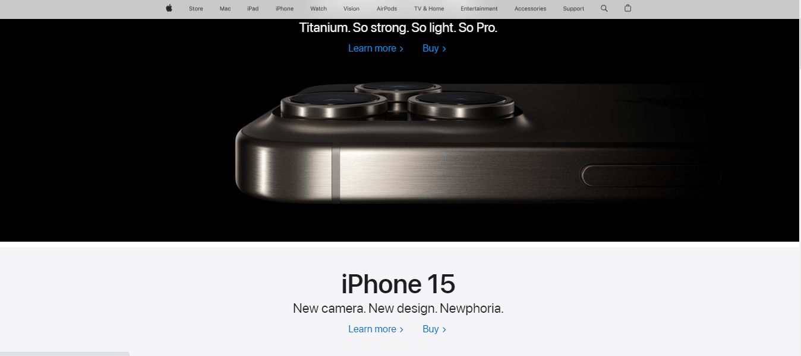

Visual Hierarchy
Example Organization/Company: Nike
Brief Description: Visit Nike's website and observe how they use large, striking product images, bold typography, and contrasting colors to create a compelling visual hierarchy. The most important elements, such as new product releases and featured collections, are prominently displayed, while secondary information is organized neatly, guiding users' attention effectively.
Visit Nike's Website Fitt's Law
Example Organization/Company: Smartphone App Interfaces (e.g., Instagram)
Brief Description: Open a popular mobile app like Instagram. Notice how app icons are designed to be large and easily tappable, especially for common actions like liking a photo or adding a comment. The positioning of interactive elements, such as buttons, considers the natural movement of the user's thumb or finger, making them more accessible.
Open Instagram AppWhite Space and Clean Design
Example Organization/Company: Apple
Brief Description: Visit Apple's website and note how they utilize ample white space to create a clean and uncluttered design. Content is given room to breathe, enhancing readability and providing a sense of simplicity and elegance. Images and text are strategically spaced, allowing users to focus on the products and messages without distractions.
Visit Apple's Website 